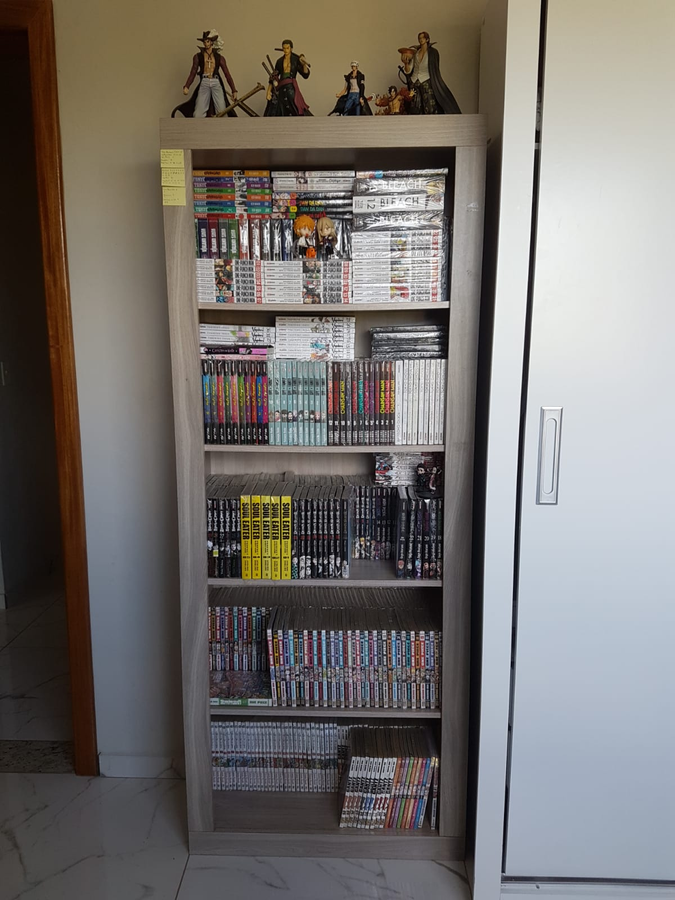
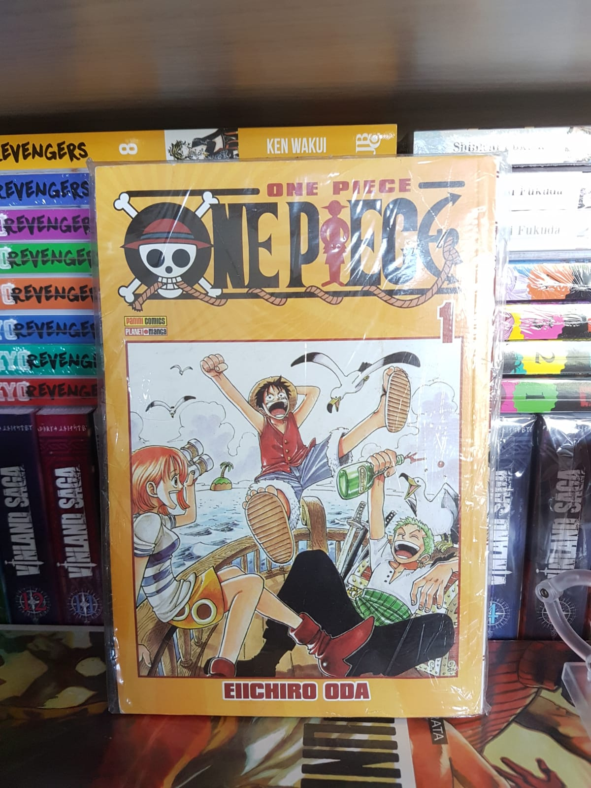

Meus Interesses
Desde criança gosto do mundo dos animes (animações japonesas). Na minha adolescência fui conhecendo mais desse universo, tanto dos animes, quanto da cultura japonesa no geral. Foi então que descobri o mundo dos mangás (quadrinhos japoneses). No começo foi uma surpresa muito grande, pois são lidos da direita para a esquerda, ou seja, de trás pra frente do que nós somos acostumados aqui no Brasil. Essa forma de leitura é conhecida como padrão oriental de leitura. Além desse padrão todo diferente, tradicionalmente os mangás são em preto e branco, outra surpresa. Confesso que demorei mais pra me acostumar com a falta de cores do que com a forma da leitura.
Mas tudo na vida é questão de adaptação. Hoje em dia sinto muito prazer ao ler as historinhas em preto e branco. Muitos desavisados podem pensar que se trata de coisa de criança, mas já informo que não é bem assim. Como os livros que somos acostumados a ler, existem mangás de todos os gêneros e para todas as idades. Suas histórias são bem profundas e comoventes e na maioria das vezes nos ensina ótimas lições e formas de se levar a vida.

Muitas dessas obras são licenciadas e publicadas aqui no Brasil. Comecei minha primeira coleção em 2012 e lembro como se fosse hoje quando comprei meu primeiro volume: One Piece - Volume 1. Desde então tenho conhecido novas obras, novas histórias, novos autores, cada qual com seu estilo de desenho. Atualmente possuo quase 500 volumes de mangás variados (nem um pouco viciado rs), algumas coleções completas, outras não. É necessário explicar que uma obra pode englobar desde apenas 1 volume ou até mesmo dezenas deles, como é o caso da obra que citei, One Piece, que hoje conta com 106 volumes e continua sendo serializado.
Explicando melhor, essas obras normalmente são histórias contínuas lançadas em periodicidade, algumas semanais, outras quinzenais, mensais e etc, mas sempre dando continuidade do começo ao fim na mesma história. Pra quem é colecionador ou até mesmo simplesmente leitor e apreciador das obras, é um hobby que é necessário ser bem paciente, pois uma obra pode demorar 10 anos ou mais pra ser finalizada.